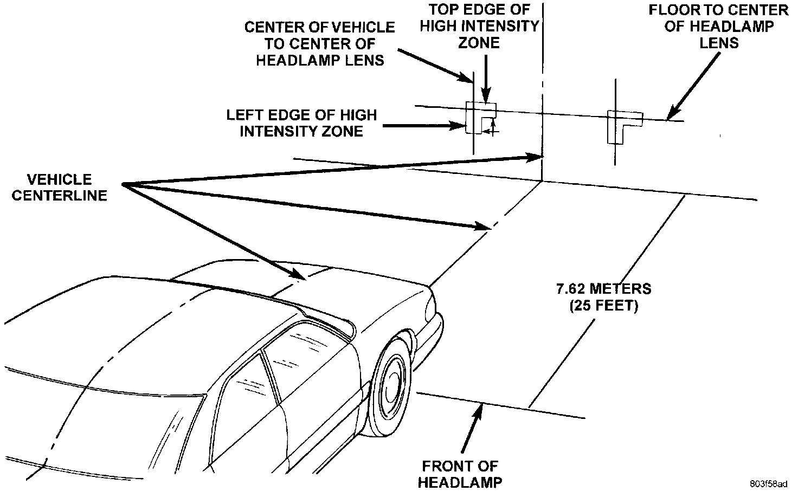
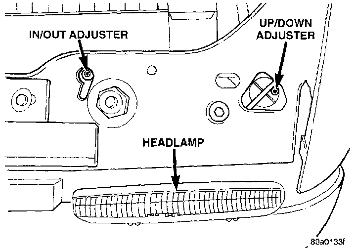

Headlamp: Adjustments
Headlamps can be aligned using the screen method provided. Alignment Tool C-4466-A or equivalent can also be used. Refer to instructions provided with the tool for proper procedures. The preferred headlamp alignment setting is 0 for the left/right adjustment and 1" down for the up/down adjustment.Headlamp Alignment Preparation
1. Verify headlamp dimmer switch and high beam indicator operation.
2. Correct defective components that could hinder proper headlamp alignment.
3. Verify proper tire inflation.
4. Clean headlamp lenses.
5. Verify that luggage area is not heavily loaded.
6. Fuel tank should be FULL. Add 2.94 kg (6.5 lbs.) of weight over the fuel tank for each estimated gallon of missing fuel.
Alignment Screen Preparation
Headlamp Alignment Screen - Typical:

1. Position vehicle on a level surface perpendicular to a flat wall 7.62 meters (25 ft) away from front of headlamp lens.
2. If necessary, tape a line on the floor 7.62 meters (25 ft) away from and parallel to the wall.
3. Measure from the floor up 1.27 meters (5 ft) and tape a line on the wall at the centerline of the vehicle. Sight along the centerline of the vehicle (from rear of vehicle forward) to verify accuracy of the line placement.
4. Rock vehicle side-to-side three times to allow suspension to stabilize.
5. Jounce front suspension three times by pushing downward on front bumper and releasing.
6. Measure the distance from the center of headlamp lens to the floor. Transfer measurement to the alignment screen (with tape). Use this line for up/down adjustment reference.
7. Measure distance from the centerline of the vehicle to the center of each headlamp being aligned. Transfer measurements to screen (with tape) to each side of vehicle centerline. Use these lines for left/ right adjustment reference.
Headlamp Adjustment Using Alignment Screen
A properly aimed low beam will project the top edge of high intensity pattern on the screen from 50 mm (2 in.) above to 50 mm (2 in.) below headlamp centerline. The side-to-side left edge of high intensity pattern should be from 50 mm (2 in.) left to 50 mm (2 in.) right of headlamp centerline. The preferred headlamp alignment is 0 for the left/ right adjustment and 1" down for the up/down adjustment. The high beams on a vehicle with aero headlamps cannot be aligned. The high beam pattern should be correct when the low beams are aligned properly
Aero Headlamp Alignment Screws:

To adjust headlamp aim, rotate alignment screws.